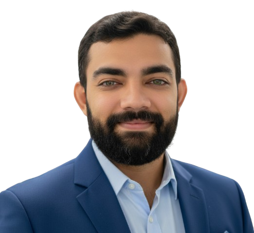

Método de Melhoria Profissional em Operações na Construção Civil
1. Introdução
O presente método tem como objetivo implantar ações práticas de melhoria na gestão operacional de obras, visando à redução de custos, eliminação de desperdícios e aumento da eficiência produtiva. O foco está em práticas de gestão de pessoas, equipamentos, materiais e processos aplicadas diretamente no canteiro de obras.
2. Justificativa
A construção civil enfrenta desafios relacionados à produtividade, custos logísticos, desperdícios de materiais e retrabalhos. A ausência de padronização e controle contínuo impacta diretamente o resultado financeiro das obras. Assim, este método justifica-se pela necessidade de adotar práticas organizacionais e operacionais que otimizem os recursos disponíveis e assegurem maior previsibilidade dos resultados.
3. Objetivos
Objetivo Geral: Reduzir custos operacionais e melhorar a produtividade das equipes de execução através da otimização de mão de obra, materiais e equipamentos.
Objetivos Específicos:
- Diminuir custos com transporte e deslocamento de equipes.
- Reduzir desperdícios de materiais e tempo improdutivo.
- Melhorar o uso e controle de ferramentas e equipamentos.
- Padronizar rotinas e ampliar o comprometimento das equipes.
4. Metas
As metas a seguir visam um ganho direto na eficiência e na redução do risco financeiro do projeto:
- Reduzir Desvio de Custo (CV) em 10% no prazo de seis meses.
- Atingir o Percent Plan Complete (PPC) de 80%.
- Diminuir o Custo da Não-Qualidade (CNQ) em 20%.
- Aumentar a Produtividade de Mão de Obra em 15%.
5. Plano de Ação
- Gestão de Mão de Obra e Produtividade (Lean): Contratar trabalhadores locais, implantar horários alternados de almoço e realizar treinamentos focados em Kaizen para eliminação de desperdícios (MUDAS).
- Gestão de Ferramentas e Equipamentos: Realizar inspeções semanais, substituir itens ociosos e implantar um Sistema Digital de Check-out/Check-in (QR Code) para rastreio e redução do tempo de procura.
- Gestão de Materiais e Logística (Custos): Planejar entregas com base na demanda de produção, organizar o almoxarifado (5S), definir Ponto de Pedido (ROP) para materiais críticos e negociar prazos garantidos com fornecedores.
- Planejamento e Organização (Prazos): Implantar o sistema Last Planner System (LPS) simplificado com reuniões semanais (WWP - Weekly Work Plan), criar cronogramas visuais e analisar a fundo os motivos de não cumprimento do planejamento.
- Sustentabilidade e Desperdício: Reduzir consumo de água e energia, segregar resíduos e reutilizar materiais quando possível, monitorando o Índice de Desperdício (ID) da obra.
6. Indicadores de Desempenho (KPIs)
O monitoramento contínuo dos seguintes KPIs garante o acompanhamento da economia e do prazo:
| Indicador | Meta | Foco da Avaliação |
|---|---|---|
| Desvio de Custo (CV) | -10% | Relatórios financeiros (Custo Real vs. Planejado) |
| Percent Plan Complete (PPC) | +80% | Reuniões semanais de planejamento (Confiabilidade do Cronograma) |
| Custo da Não-Qualidade (CNQ) | -20% | Registros de retrabalho e inspeção de qualidade (Impacto Financeiro) |
| Produtividade de Mão de Obra | +15% | Medição de horas gastas por unidade de serviço (Eficiência da Equipe) |
7. Conclusão
A aplicação deste método proporcionará ganhos reais na eficiência operacional, redução de desperdícios e fortalecimento da cultura de produtividade. As medidas propostas têm baixo custo de implantação e alto potencial de retorno, impactando positivamente a rentabilidade, a imagem da empresa e a satisfação das equipes envolvidas.
Este método, baseado em princípios de Lean Construction e gestão de valor agregado, é adaptável a diferentes tipos de obras e pode ser expandido conforme o crescimento da empresa, servindo como base para um modelo de gestão de operações sustentável e de alto desempenho.